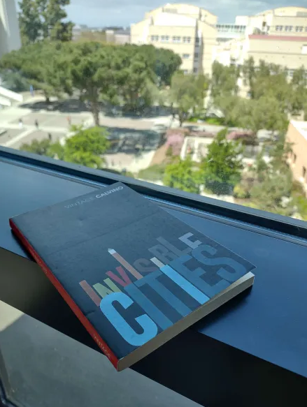
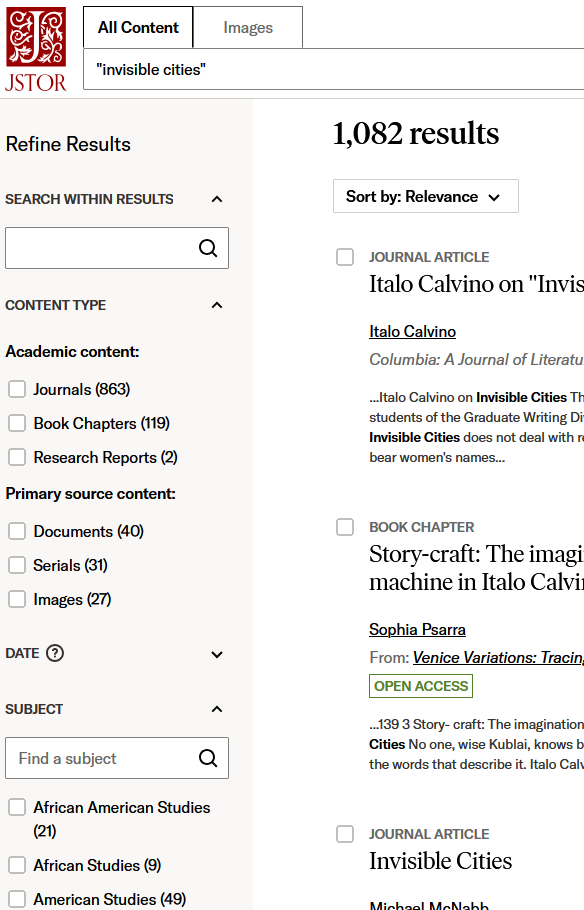

Caden Lee's Digital Archive
W O R L D B U I L D I N G - 2 0 2 5
# Research Log 2: Determining a Topic and Learning from Others 2025/04/19
After thinking about my possible primary sources, I decided that the one I was most curious about, and that had the most potential, was the 1972 novel Invisible Cities by Italo Calvino. Since it's a complicated book, I'll take some time to introduce it before going into my secondary sources.
Invisible Cities follows a unique structure: in the outer frame story, traveler Marco Polo converses with the emperor Kublai Khan, describing to him the cities in his vast empire. He describes each city with poetic language in one or two pages, and they are somewhat independent of each other, meaning there is no one set order in which to read them. They are categorized into series such as "Cities and Memory", "Cities and Signs", and so on, then organized in a complicated way throughout the book's chapters, as seen in this visualization:

Invisible Cities follows a unique structure: in the outer frame story, traveler Marco Polo converses with the emperor Kublai Khan, describing to him the cities in his vast empire. He describes each city with poetic language in one or two pages, and they are somewhat independent of each other, meaning there is no one set order in which to read them. They are categorized into series such as "Cities and Memory", "Cities and Signs", and so on, then organized in a complicated way throughout the book's chapters, as seen in this visualization:
Left (image 2): a visualization created by Sophia Psarra for a UCL Press article describing the order in which the cities are presented. Each chapter is like a window, sliding down and showing several of the cities as arranged from the sections

Above (image 1): my copy of Invisible Cities. The book is not too long, allowing me to reasonably analyze much of it, and its repetitive structure means I can analyze it mostly as a whole, rather than becoming too distracted by a long narrative progression
Above (image 1): my copy of Invisible Cities. The book is not too long, allowing me to reasonably analyze much of it, and its repetitive structure means I can analyze it mostly as a whole, rather than becoming too distracted by a long narrative progression
In Ersilia, to establish the relationships that sustain the city's life, the inhabitants stretch strings from the corners of the houses, white or black or gray or black-and-white according to whether they mark a relationship of blood, of trade, authority, agency. When the strings become so numerous that you can no longer pass among them, the inhabitants leave: the houses are dismantled; only the strings and their supports remain.
Because this book and its context was originally quite mysterious to me, I decided to find some sources then build more research questions out of those. Current scholarly sources that specifically discuss the book seem to be divided into two main lenses:
- Analysis of literary style and genre, reflecting how the novel fits into postmodernism and describing its structure
- Analysis of history and culture, especially considering how it deals with centuries-long creations of "otherness" (such as orientalism) and imperial knowledge production, as well as what culture and cities mean in an increasingly globalized world
After re-reading parts of the novel and looking through some sources initially, I've decided on some preliminary research questions:
- What genres could the book fall under? (It could be considered a conversation, a travel guide, an account, a survey of cities, or many other things; it does not directly address the reader, but it seems to involve the reader)
- What does the structure accomplish? (The structure above clearly makes the book an interesting read, but how does it affect the book's message?)
- What historical situations and events shaped Calvino's authorship of this book? (One example from my research on postmodernism so far is that 20th-century events like the World Wars, decolonization, and the Cold War shook faith in the rationality of systems like imperialism and scientific progress)
- How does Invisible Cities use, adapt, and respond to a sense of exoticization or "othering"? (What I found interesting while reading, and a common thread I saw in sources, was that through Marco Polo, Calvino seems to describe every city, including Western European ones like Paris, as equally fantastical and strange. In fact, he says that in describing all these complicated cities, he is describing his home city of Venice. This seems to contrast with Orientalism, which treats the "East" as mysterious but the "West" as rational and familiar. Much like we discussed in class, Orientalism was driven by the very kind of knowledge production that Marco Polo's original, real-life reports of Asia would have likely contributed to)
# Style and Genre
📜Springer, Carolyn. "Textual Geography: The Role of the Reader in 'Invisible Cities.'" Modern Language Studies, vol. 15, no. 4, 1985, pp. 289–99. JSTOR, https://doi.org/10.2307/3194671. Accessed 16 Apr. 2025.
| 🔍Search: | "Invisible Cities" Calvino | |
|---|---|---|
| 📖Accessibility: | I can access the full text in JSTOR ↗ | |
| 💡Disciplinary Perspectives: | Springer specializes in Italian literature as well as nineteenth-century history and the Renaissance, so she provides a very literary perspective on the text | |
| ⭐Key ideas: | "A dramatization of the role of the reader in contemporary fiction", extra-diegetic components, collaboration of reader and narrator, words that "break loose from the forms we invent to contain them" |
📜Panigrahi, Sambit. “Postmodern Temporality in Italo Calvino’s ‘Invisible Cities.’” Italica, vol. 94, no. 1, 2017, pp. 82–100. JSTOR, http://www.jstor.org/stable/44504640. Accessed 18 Apr. 2025.
| 🔍Search: | "Invisible Cities" Structure | |
|---|---|---|
| 📖Accessibility: | I can access the full text in JSTOR ↗ | |
| 💡Disciplinary Perspectives: | Panigrahi is an English profesor focusing on postmodern literature, providing a view of the text's progression as a whole and how its style is shaped by trends in literature | |
| ⭐Key ideas: | "Continual blurring between the traditional distinctions between past, present, and future", "new and innovative theoretical templates offered by postmodernism", "non-chronological temporal theories", "heterochrony" |

Above (image 3): many JSTOR results for my first search about Invisible Cities. I tried other databases, but JSTOR proved to be the most comprehensive.
Above (image 3): many JSTOR results for my first search about Invisible Cities. I tried other databases, but JSTOR proved to be the most comprehensive.
# History and Culture
📜Ryan, Robert. "Politics, Discourse, Empire: Framed Knowledge in Italo Calvino’s Invisible Cities." Interdisciplinary Literary Studies, vol. 18, no. 2, 2016, pp. 222–37. JSTOR, https://doi.org/10.5325/intelitestud.18.2.0222. Accessed 18 Apr. 2025.
| 🔍Search: | "Invisible Cities" Calvino | |
|---|---|---|
| 📖Accessibility: | I can access the full text in JSTOR ↗ | |
| 💡Disciplinary Perspectives: | Ryan analyzes the implications of literature, including Invisible Cities, from a political lens, exploring how fiction can represent or resist political situations | |
| ⭐Key ideas: | The book is a "schematic of empire and knowledge production", and it "excavat[es] the impulses of domination implciit implicit in empire building" to build possibilities for resistance against political structural domination; despite how widespread the Khan's empire is, each city is fully autonomous from it, unknown by its ruler, and the meaning from Polo's stories constantly shifts |
📜Birringer, Johannes. “Invisible Cities/Transcultural Images.” Performing Arts Journal, vol. 11/12, 1989, pp. 120–38. JSTOR, https://doi.org/10.2307/3245431. Accessed 18 Apr. 2025.
| 🔍Search: | "Invisible Cities" empire | |
|---|---|---|
| 📖Accessibility: | I can access the full text in JSTOR ↗ | |
| 💡Disciplinary Perspectives: | Birringer is a German choreographer and artist who traveled and lived around the world in the late 1900s, giving him a global performing arts perspective on Invisible Cities. He discusses real-life geography, cities, and multinationality | |
| ⭐Key ideas: | Perspectives on cities have changed because of "the speed of travel and the collapsing of geographical boundaries", making it difficult to find "the center" and the "confines of cultural productions and of the objectifications of 'identity' and 'otherness'" in recent times |

Above (image 4): an artwork included in this article, The Combat of the Giaour and Hassan by Eugène Delacroix, as an instance of Orientalism inspired by the Silk Road
📜Beach, Milo C. “The Ear Commands the Story: Exploration and Imagination on the Silk Road.” Art Institute of Chicago Museum Studies, vol. 33, no. 1, 2007, pp. 8–90. JSTOR, http://www.jstor.org/stable/20205542. Accessed 18 Apr. 2025.
| 🔍Search: | "Invisible Cities" empire | |
|---|---|---|
| 📖Accessibility: | I can access the full text in JSTOR ↗ | |
| 💡Disciplinary Perspectives: | Unlike the other sources, this one only briefly mentions Invisible Cities, but does describe Marco Polo and the Silk Road, which he traveled across, providing historical context for why Calvino may have chosen the setting and characters that he did | |
| ⭐Key ideas: | Orientalism, "ignorance and imagination" in European depictions of unknown lands in Asia, a short history of cultural exchanges/trade/conquest along the Silk Road, the mixing of cultures in art that resulted |
# Reflection and Next Steps
I've gotten a much better understanding of Invisible Cities and its context from my research:
- Because "postmodernism" can be a very broad term, putting the novel in a box of "postmodern literature" to analyze it could be an overgeneralization and isn't the most productive. Some secondary sources do use the term, though, so I should look through them and determine what specific attributes are relevant to the novel.
- I've made connections between many of these sources. For instance, "The Ear Commands the Story" and "Textual Geography" both argue that the imagination and perspective of the reader is what shapes a story's meaning (leading to the consequences of Orientalism and the like)
- I understand the differences between the Khan's perspective as the ruler of an empire and Polo's perspective as a traveler (and thus how these, too, shape the meanings of the stories)
Overall, this process has broadened my understanding of Invisible Cities: before, I saw it as some kind of beautiful literary gem in isolation; now, I see how it relates to literary perspectives, the world around it, and centuries of history, opening up my ability to understand and research the text.
Going forward, I believe the two stylistic sources I identified first will help aid my discussion of the text by relating my ideas to the writing, but the three "History and Culture" sources will drive my main argument because they connect it to larger themes in the outside world. Because of that, for my first annotation, I will annotate Robert Ryan's article "Politics, Discourse, Empire: Framed Knowledge in Italo Calvino's Invisible Cities", which seems like a powerful foundation to build upon for the rest of my project.
Main primary/secondary source citations:
Calvino, Italo. Invisible Cities. Translated by William Weaver, Giulio Einaudi, 1972.
Image credits (in order, starting with image 1):
1. An image of my physical copy of Invisible Cities, published by Random House
2. A visualization of the order in which cities are described in Invisible Cities, created by Sophia Psarra for a UCL Press article on the novel
3. A screenshot of results on JSTOR for a search for "invisible cities" as of April 16, 2025
4. The Combat of the Giaour and Hassan, a painting by Eugène Delacroix in 1826
Calvino, Italo. Invisible Cities. Translated by William Weaver, Giulio Einaudi, 1972.
Image credits (in order, starting with image 1):
1. An image of my physical copy of Invisible Cities, published by Random House
2. A visualization of the order in which cities are described in Invisible Cities, created by Sophia Psarra for a UCL Press article on the novel
3. A screenshot of results on JSTOR for a search for "invisible cities" as of April 16, 2025
4. The Combat of the Giaour and Hassan, a painting by Eugène Delacroix in 1826
All code (software and associated documentation files) is © 2025 Caden Lee under the MIT license (source).
Analysis on this digital archive is written by Caden Lee, unless stated otherwise.
All referenced works (images, websites, quotes, etc.) not by me belong to their respective creators and are used here for commentary and educational purposes.
Last updated: 2025/04/18
All referenced works (images, websites, quotes, etc.) not by me belong to their respective creators and are used here for commentary and educational purposes.
Last updated: 2025/04/18